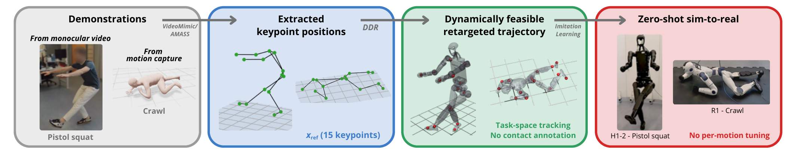
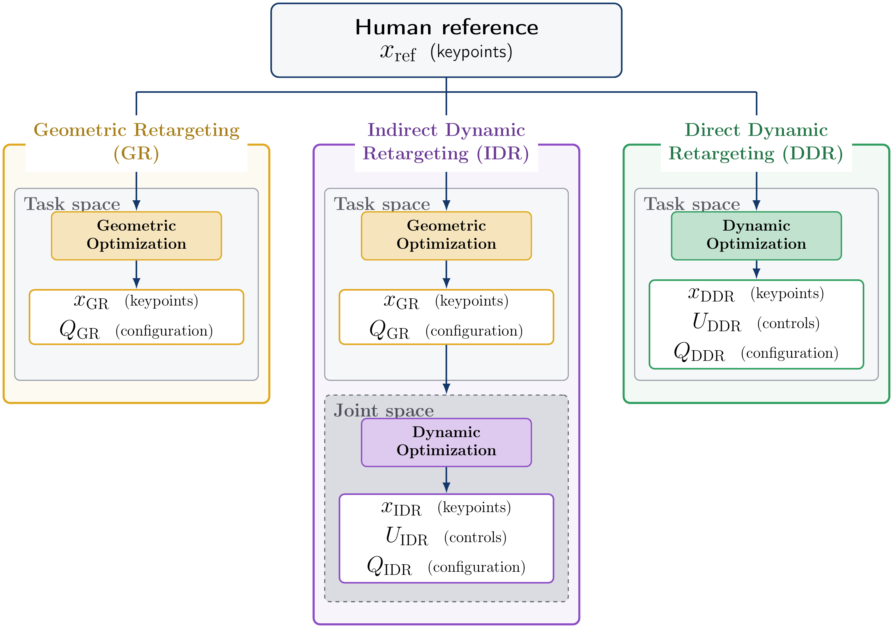
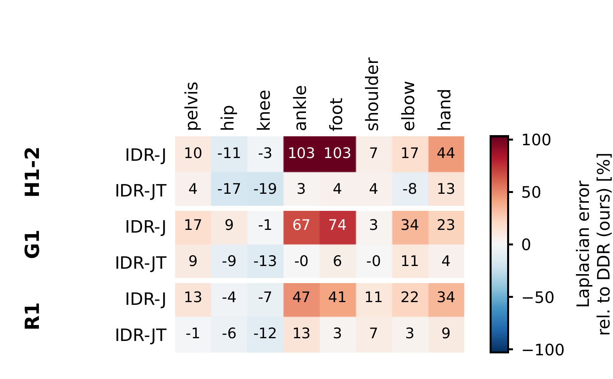
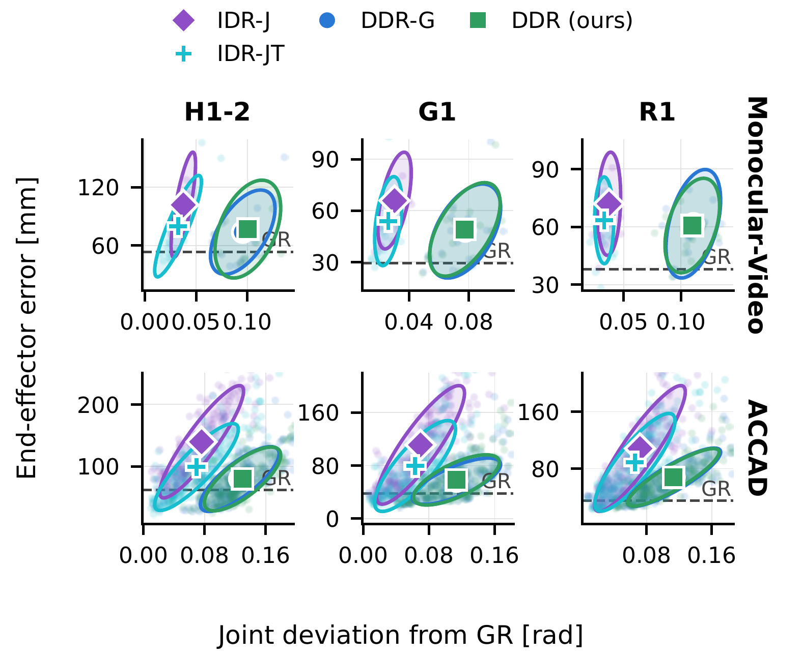
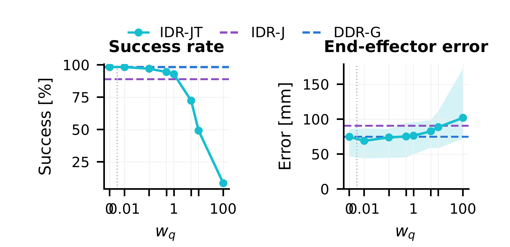
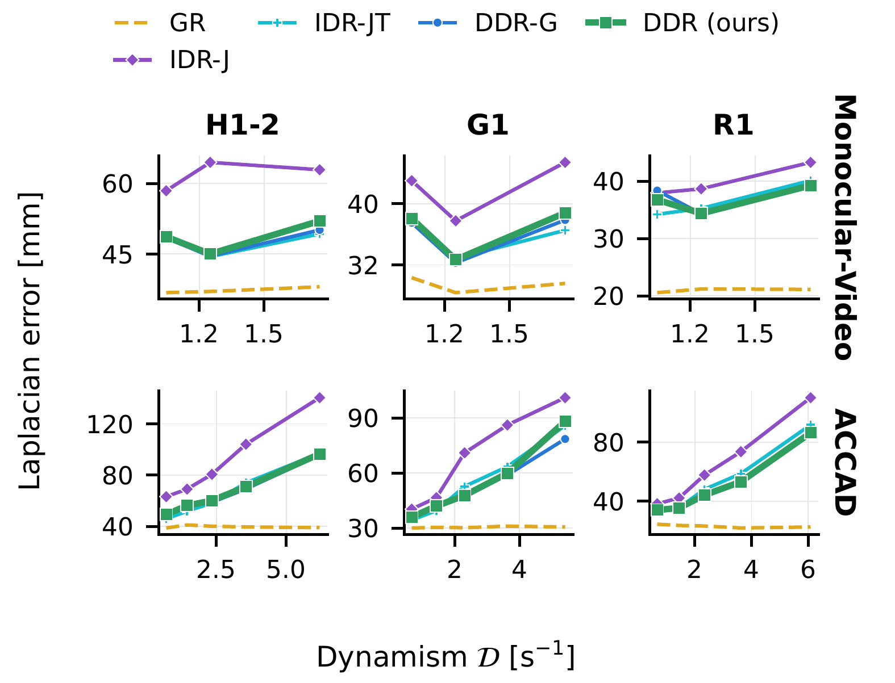
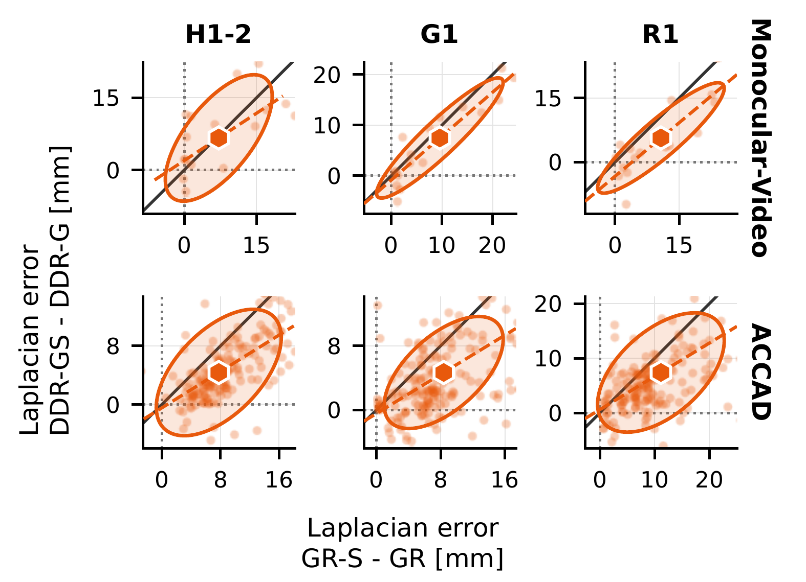

Dynamically feasible references for all the flat-ground motions of AMASS, retargeted with DDR on H1-2, G1 and R1.
Imitation Learning from monocular video demonstrations provides a scalable approach for teaching complex skills to humanoid robots. However, translating human motion to humanoids requires overcoming significant morphological mismatches. So far, dynamic retargeting methods obtain physically feasible references by tracking an intermediate geometric retargeting in simulation, usually through its joint angles. We show that this intermediate step biases the solution through two factors: the space in which the reference is tracked, joint angles rather than task-space keypoints, and the tracked reference itself, the keypoints of the geometric retargeting rather than those of the human demonstration.
We propose Direct Dynamic Retargeting (DDR), which bypasses both: it tracks the human keypoints exclusively in task space with a sampling-based Model Predictive Control solver inside a physics simulator, without contact annotations. DDR is evaluated in simulation against joint-space dynamic retargeting under controlled conditions (identical solver, budget, and warm start), on three humanoids and on motions from monocular videos and motion capture. The tracking space explains most of the gain in end-effector accuracy and robustness, and tracking the human demonstration directly prevents the transmission of errors from the intermediate geometric reference. This advantage carries over to Reinforcement Learning imitation policies, which reproduce the human demonstration more faithfully than policies trained on joint-space dynamic references. These policies are deployed zero-shot on two physical humanoids of very different sizes, H1-2 and R1, including contact-rich motions. We release the source code and a dataset of dynamically feasible references covering all the flat-ground motions of AMASS on the three humanoids.
Track the human, not the intermediate retargeting


Matching the joint angles of the geometric reference anchors the solution to a posture that is generally not dynamically feasible, and degrades the end-effectors, which carry contact and balance.
The errors of the geometric retargeting become the target of the dynamic stage, instead of the human demonstration itself.
DDR avoids both: a CEM-based MPC tracks the human keypoints in task space inside MuJoCo, and uses the geometric solution only as a warm start.
A controlled comparison: same simulator, solver, budget and warm start for all dynamic methods





H1-2, same solver, budget and warm start. White spheres: human keypoints
Imitation policies trained on DDR references, same cost weights for all motions and robots
The same pipeline transfers zero-shot from the small R1 to the full-size H1-2. The motions of the H1-2 are less clean than those of the R1: larger robots are harder to control.
Dynamically feasible references for all the flat-ground motions of AMASS, retargeted with DDR on H1-2, G1 and R1.
@misc{roux2026directdynamicretargetinghumanoid,
title={Direct Dynamic Retargeting for Humanoid Imitation Learning from Videos},
author={Constant Roux and Ludovic De Matteïs and Mathias Gatineau and Armand Jordana and Valentin Guillet and Nicolas Mansard and Olivier Stasse and Philippe Souères},
year={2026},
eprint={2605.23762},
archivePrefix={arXiv},
primaryClass={cs.RO},
url={https://arxiv.org/abs/2605.23762},
}